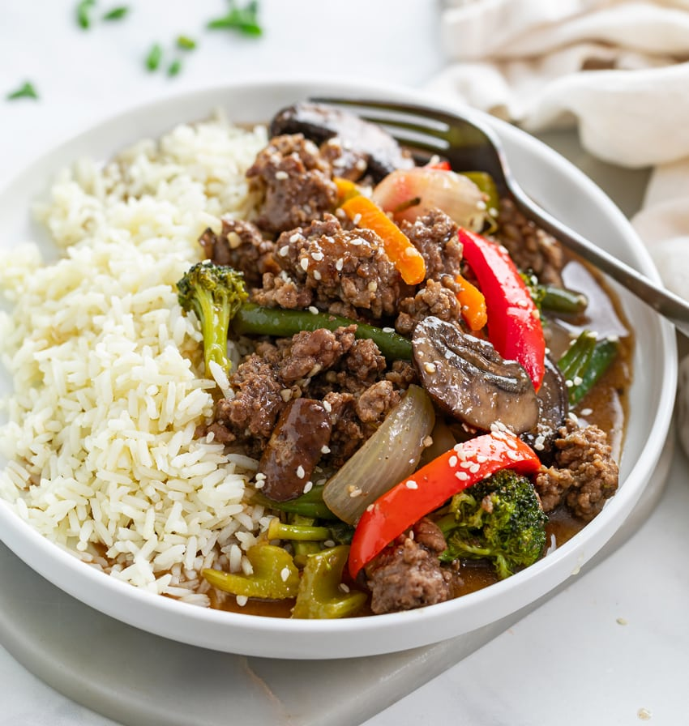

Ground Beef Stir Fry

Description
TWhen it comes to Beef Recipes, you can’t beat the simplicity of making a stir fry with some ground beef and fresh or frozen veggies! I love enjoying this sweet and savory brown sauce with a side of rice!
Ingredients
- Meat
- Wine
- Chardonnay or Pinto Grigio
- Veggies
- Hot Sauce
- Garlic - 2 cloves
- Onion - 115g
- Spaghetti - 500g
- Spices and seasonings
- Fresh parsley
- Dried basil leaves
- Salt
- Fennel seeds
- Black pepper
Recipe Step-by-Step Instructions
- Season the ground beef and brown it in olive oil until cooked through.
- Drain grease and set aside.
- Deglaze the skillet with white wine (or broth), and let it reduce by half.
- Add the broccoli, green beans, mushrooms, onions, and celery and cook for 3 minutes, or until slightly softened.
- Add the carrots and bell peppers and cook for 2 more minutes.
- Add the sauce mixture and bring to a gentle bubble, reduce for 2-3 minutes.
- Add cornstarch slurry to the bubbling sauce and stir to combine.
- Reduce heat to low and add the beef back.
- Stir to combine and allow it to heat through.
- Top with desired garnishes and serve with rice or noodles.
Nutrition Facts per serving
| Calories |
Fat |
Carbs |
Protein |
| 437 |
15g |
37g |
37g |
Return to the top
Return to main page